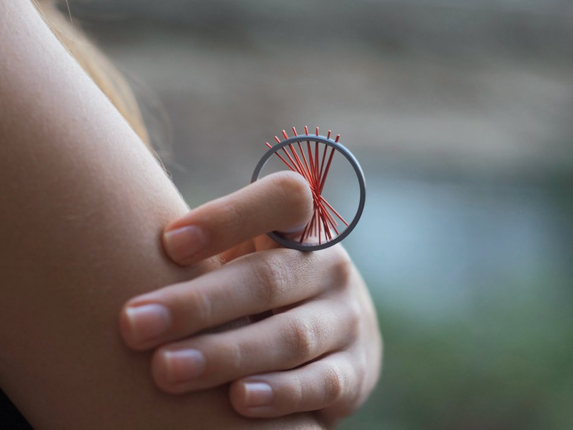
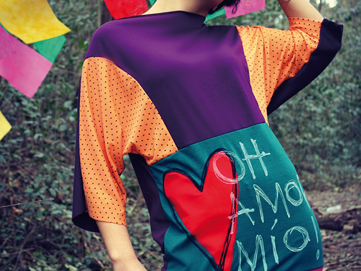
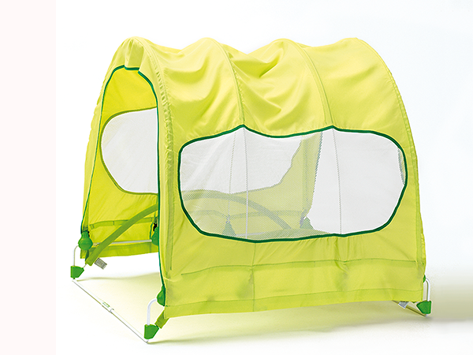
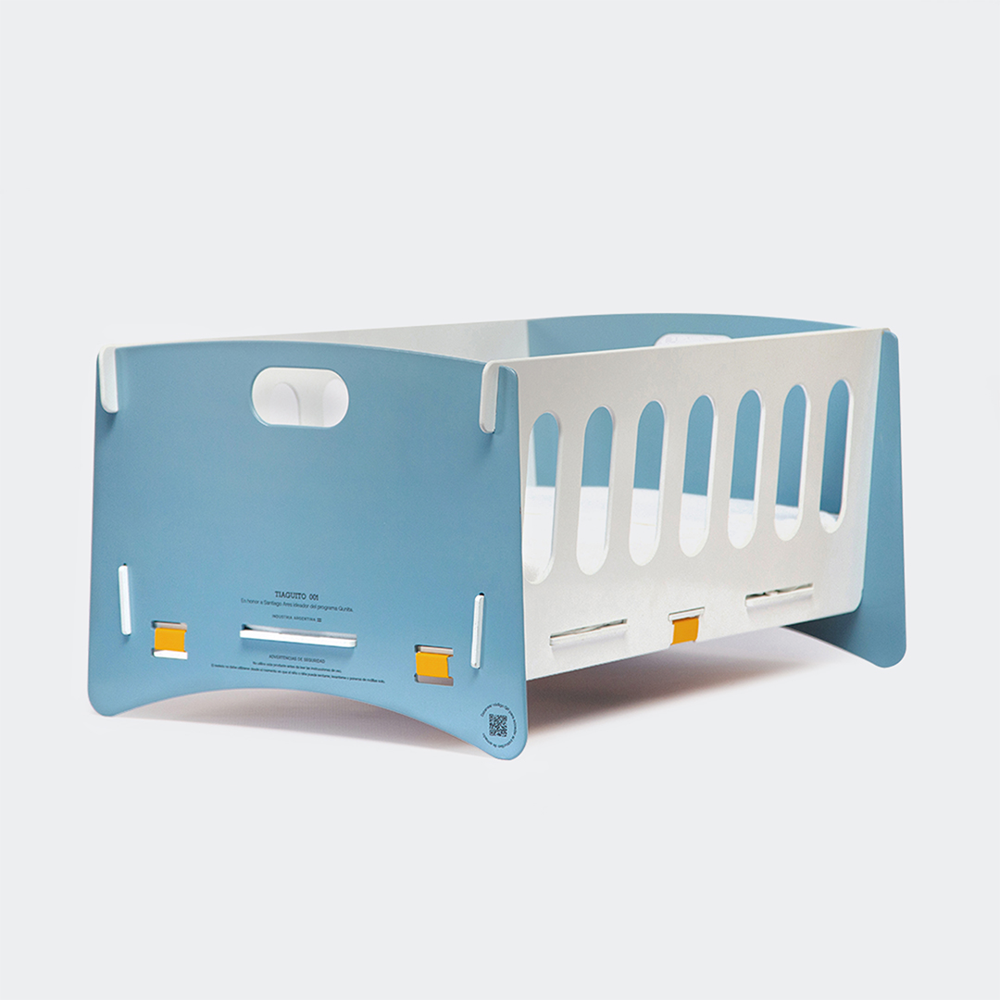
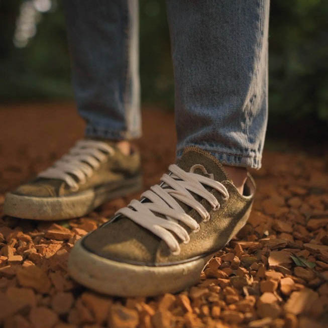
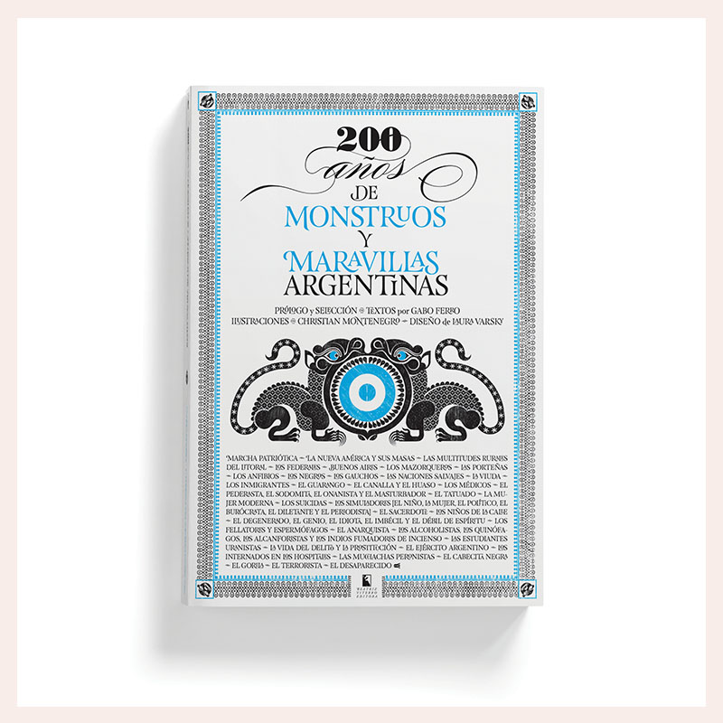
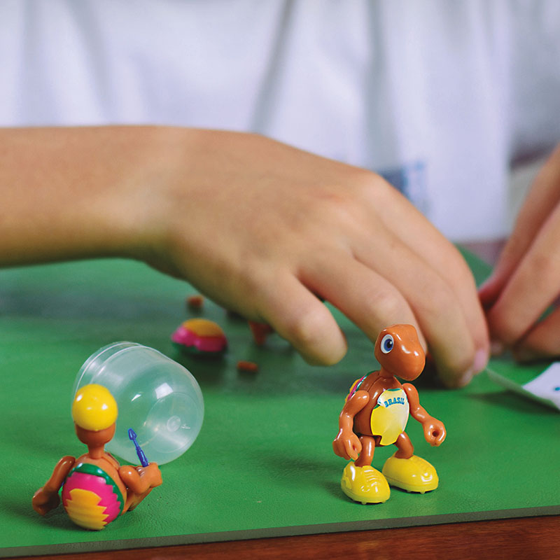
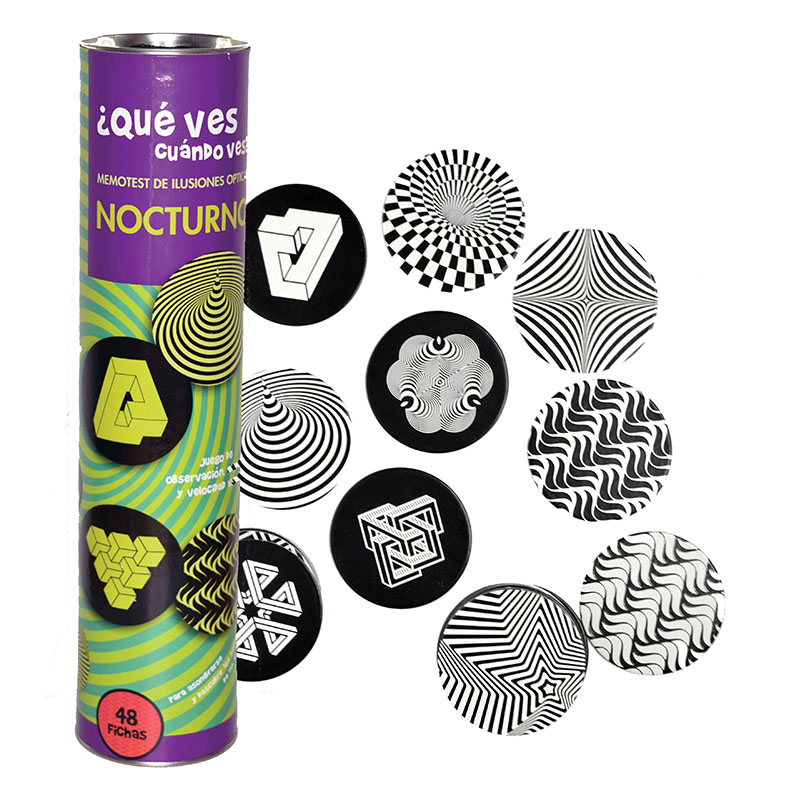
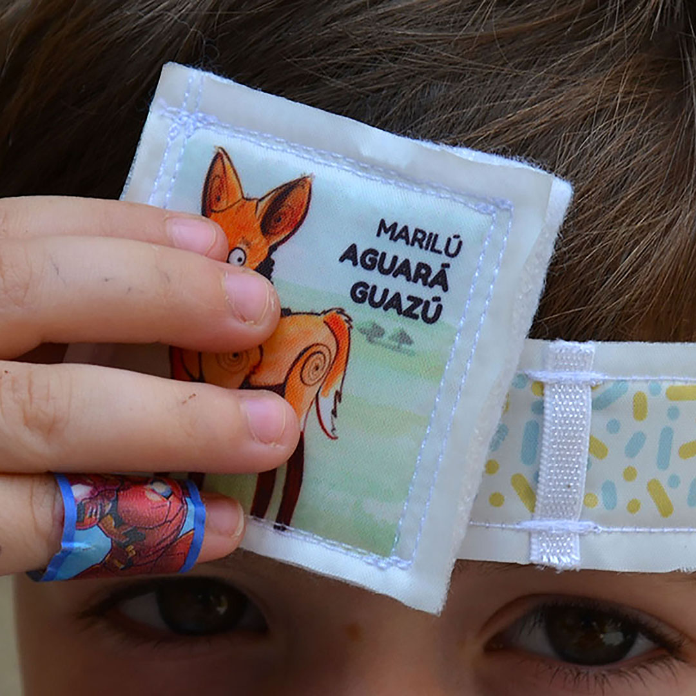
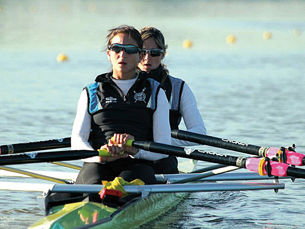

…Y MARTE?
Joyería de autor: piezas donde la forma y el gesto se vuelven lenguaje.
Foto y ficha: Paula Pizani / Sello de Buen Diseño
Diseñá lo que viene es una campaña de puesta en valor del Diseño: una invitación a reconocerlo como campo de conocimiento, formación universitaria y práctica profesional que interviene en la vida cotidiana y en las decisiones colectivas.
No todo lo importante se ve. El Diseño suele asociarse principalmente con la estética, la creatividad o la apariencia de los objetos y mensajes. Aunque estas dimensiones forman parte de la disciplina, no explican por sí solas su alcance.
Detrás de cada proyecto existen procesos de investigación, análisis, conocimientos específicos, decisiones y métodos de trabajo. Reconocer estas dimensiones permite comprender el Diseño como un campo de conocimiento, formación y ejercicio profesional.
Poner en valor el Diseño implica ampliar la mirada y reconocer todo lo que interviene en la construcción de una propuesta.
Donde hay una necesidad, hay una decisión de diseño.
El Diseño participa en la manera en que nos comunicamos, utilizamos objetos, accedemos a información y servicios, vestimos, aprendemos y habitamos espacios. En la vida cotidiana estas dimensiones no vienen separadas: la señal que te guía, el objeto que usás, la ropa que elegís y la pantalla que mirás son resultado de decisiones entrelazadas de comunicación, producto, espacio y tecnología.
Sus distintas disciplinas desarrollan herramientas y propuestas para responder a necesidades concretas en contextos diversos. El Diseño está ahí, de manera integral, aunque no siempre se lo note.
¿Querés estudiar Diseño?
…Y MARTE?
Joyería de autor: piezas donde la forma y el gesto se vuelven lenguaje.
Foto y ficha: Paula Pizani / Sello de Buen Diseño

Manual para moverse libremente bajo la lluvia…
Indumentaria femenina que piensa el cuerpo en movimiento y el clima como parte del diseño.
Foto y ficha: Besos de Sapo (Nicolás Javier Avalos) / Sello de Buen Diseño

Tatú Carreta
Baranda bilateral para camas infantiles: mobiliario que resuelve una necesidad concreta con diseño industrial.
Foto y ficha: Horacio Gabriel Minnicelli – Intorno Argentina / Sello de Buen Diseño

1000 días – Sueño Seguro
Diseño con impacto público: mobiliario desarrollado para el Ministerio de Salud de la Nación.
Foto y ficha: Ministerio de Salud de la Nación / Sello de Buen Diseño

182 Chopped
Calzado de moda: forma, material y producción local en equilibrio.
Foto y ficha: John Foos / Sello de Buen Diseño

200 años de monstruos y maravillas argentinas
Diseño editorial: una publicación que cuenta la historia gráfica del país.
Foto y ficha: Laura Varsky Diseño / Sello de Buen Diseño

¡Tortuguita Sorpresa!
Juguetes nacionales que convierten el juego cotidiano en descubrimiento.
Foto y ficha: Promar / Sello de Buen Diseño

¿Qué ves Cuándo ves?
Juego de mesa que invita a mirar y nombrar el mundo desde chicos.
Foto y ficha: Juegos del Caracol / Sello de Buen Diseño

¿Quién soy?
Diseño para jugar y aprender: otra propuesta del sector de juguetes nacional.
Foto y ficha: Mi Suelito Lindo / Sello de Buen Diseño

0223.AR
Indumentaria deportiva: rendimiento, identidad y producción local.
Foto y ficha: Andrea Soledad Lostra Castan (Cronos Life) / Sello de Buen Diseño
01 / 10
Productos distinguidos con el Sello de Buen Diseño Argentino, la distinción de la Secretaría de la Pequeña y Mediana Empresa a la producción de la industria nacional. Imágenes y fichas del catálogo oficial: sbd.produccion.gob.ar
Estudiar Diseño no es aprender a decorar: es aprender a mirar antes de proponer. Es entender qué hay detrás de todo lo que se diseña y por qué esas decisiones importan.
La formación en Diseño combina conocimientos teóricos y técnicos, investigación, experimentación y práctica proyectual. Implica aprender a analizar contextos, reconocer necesidades, formular alternativas, desarrollar propuestas y fundamentar decisiones.
La universidad constituye un espacio para construir conocimientos, investigar, debatir, experimentar y desarrollar herramientas para intervenir profesionalmente en distintos campos.
Reconocer el Diseño como disciplina supone comprender tanto sus procesos de formación como su contribución al desarrollo cultural, social, productivo y tecnológico.
Elegí una palabra para ver qué implica en la práctica.
Antes de proponer algo hay que mirar cómo se usa lo que ya existe: quién lo usa, en qué momento y con qué dificultades.
En un proyecto: diseñar la señalización de un edificio empieza por observar cómo se pierde la gente dentro.
La investigación da sustento: fuentes, entrevistas, referencias y datos para no decidir solo por intuición.
En un proyecto: antes de armar una campaña se releva cómo se informa hoy la misma temática.
Analizar es ordenar y comparar la información hasta convertirla en criterios concretos de proyecto.
En un proyecto: comparar dos piezas gráficas para ver cuál se entiende más rápido y por qué.
Probar, equivocarse y volver a probar: bocetos, materiales, prototipos y variantes hasta encontrar la solución.
En un proyecto: imprimir diez versiones de una tipografía para elegir la que mejor se lee.
Cada decisión se sostiene con argumentos: por qué esa forma, ese color, ese material y no otro.
En un proyecto: explicar con razones por qué una interfaz ordena la información de determinada manera.
El trabajo se pone en común y se contrasta con pares, docentes y otras miradas para mejorarlo.
En un proyecto: una crítica de taller puede cambiar por completo el rumbo de un trabajo.
Diseñá lo que viene es una campaña de puesta en valor del Diseño que busca ampliar su reconocimiento social y destacar su importancia como campo de conocimiento, formación universitaria y práctica profesional.
La iniciativa propone visibilizar la diversidad de disciplinas del Diseño, sus procesos de trabajo y su capacidad para intervenir en problemáticas de la sociedad.
A través de una perspectiva vinculada con la formación, la docencia y la investigación, la campaña invita a reconocer el Diseño como parte de la construcción de nuevas posibilidades para el futuro.
Una iniciativa de
App diseñAR
Una aplicación para explorar las posibilidades educativas dentro del Diseño Gráfico en Argentina: consultar carreras, cursos y otras propuestas de formación, y descubrir qué se puede estudiar para dedicarse a diseñar.
El futuro también se diseña.
Campaña institucional de